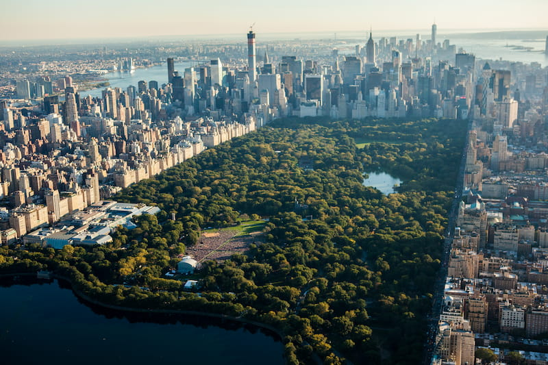

My favourite city is New York City .It is well know for it's beauty .New york city is filled with amazing tall building and wonderful and lovely people . New York is in the United States of America .The central park is one of the most famous places in New York receiving roughly 42 million visitors per year .

This part of New York city is lovely that many people across the globe including me , want to visit this place so much .